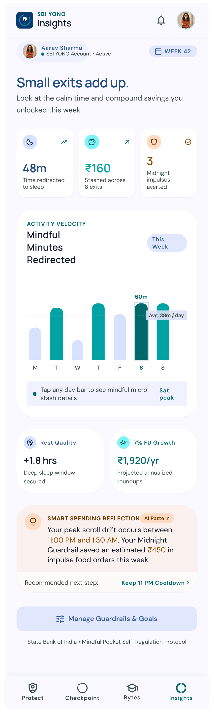
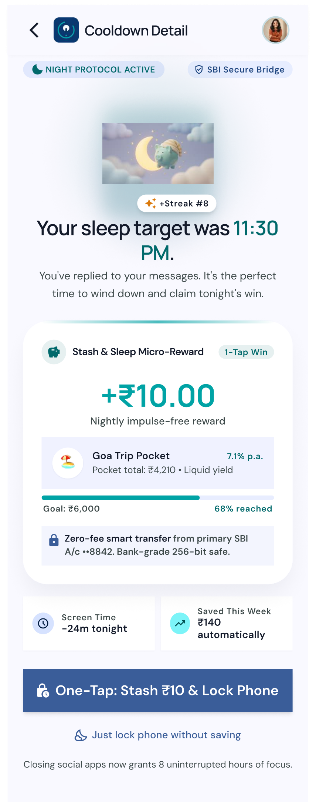

Fintech · Behavioral Product Design · iOS Case Study
SBI Mindful Pocket
Reimagining Digital Wellbeing & Micro-Wealth for Gen-Z
Executive Summary
College students open social media for legitimate tasks (DMs, project coordination, sketch references), but algorithmic feeds hijack their attention. 78% of students exceed intended screen time, displacing sleep and triggering late-night impulse spends.
Existing screen-time blockers fail because they rely on punitive lockouts and moral shaming. SBI Mindful Pocket inverts this paradigm through behavioral economics:
- Protect: Anchors user intent in 2 seconds and gates late-night impulse checkouts.
- Replace: Replaces mindless dopamine loops with 15-second financial curiosity bytes.
- Reward: Converts saved time into real money via automated ₹10 micro-exits into high-yield liquid vaults.
1. Context & Opportunity Space
College students (18–24) live in a hyper-connected environment where communication is co-located with entertainment. Students cannot simply delete these apps without social and academic penalties.
The Hidden Financial Drain: Between 11:00 PM and 2:30 AM, fatigue depletes prefrontal inhibitory control, driving impulsive midnight food delivery orders and unplanned fast-fashion purchases. Students lose sleep and build zero savings momentum.
Strategic Value for SBI: Capturing early Gen-Z users before private neobanks, driving recurring CASA micro-deposits, and establishing ethical banking leadership.
2. Primary Research Synthesis
Built upon a 57-respondent quantitative survey and 8 qualitative interviews (U1–U8):
78%Exceeded planned visit duration
33%Displaced sleep as top casualty
42%Stopped only on "clock shock"
30%Opened app solely to reply to a DM
"Bas sone se pehle ek baar last time Insta check kar leti hu, kya kya messages aaye hain... I spent genuinely two hours watching Reels."
— Participant U6 (The Bedtime DM Trap)
"Aadha ghanta socha tha, phone screen par 1:40 AM dekha to shock laga. No app warns you nicely; they just lock you out, which makes me angry so I bypass the limit."
— Participant U1 (The Clock Shock)
3. Behavioral Economics Architecture
1. Implementation Intentions (Peter Gollwitzer)
Explicitly declaring intent before encountering a stimulus doubles goal attainment. A 2-second prompt ("What's your purpose right now?") activates conscious System 2 awareness.
2. Micro-Friction as Cognitive Reset (BJ Fogg)
A 10–15 second pause breaks the automatic dopamine loop without forcing an aggressive block, giving the prefrontal cortex time to re-evaluate.
3. Loss Aversion Reframing (Kahneman & Tversky)
Instead of shame ("You failed your limit"), the exit is framed as an instant win: "+₹10 saved to your Goa Trip Fund & 30 minutes of deep sleep protected."
4. Frictionless Internal Sweeps (RBI Norms)
Under Indian banking guidelines, external transactions require 2FA/OTP. SBI Mindful Pocket utilizes internal smart sweeps between primary savings and liquid sub-accounts, executing in 1-tap with zero OTP friction.
4. UI Execution & High-Fidelity Screens
The companion interfaces with iOS via Apple Screen Time APIs to provide contextual bridges and financial compounding insights.

Dual-Impact Insights Dashboard

Contextual Exit Bridge & Micro-Save
5. Technical Feasibility & Compliance
iOS Screen Time API (FamilyControls): Allows authorized wellbeing applications to monitor app category thresholds and launch shield configurations within Apple's privacy sandbox.
RBI-Compliant Micro-Sweeps: The Focus Stash functions as an internal recurring liquid sub-account (Sweep-in / Sweep-out Liquid RD) under the customer ID. Users authorize an initial e-Mandate during onboarding, allowing single-tap ₹10 micro-saves without OTP prompts.
6. Interview Defense & FAQs
Q1: Why not simply block the social apps entirely?
30% of app opens are for legitimate communication (project group chats, family DMs). Punitive blockers cause psychological reactance—users get frustrated and delete the app. Mindful Pocket builds internal digital agency.
Q2: Isn't micro-saving ₹10 too small for a bank like SBI?
For a student, ₹10/day is frictionless. For SBI, ₹10/day across 10 million college students represents ₹10 Crore in daily sticky retail deposits (₹300 Crore/month) captured before private competitors acquire them.
Q3: What makes this design ethical?
Zero shaming vocabulary (no "Addiction" or "Failure"). The user always retains control with "Not Now" and "+2 Mindful Minutes" options on every checkpoint.